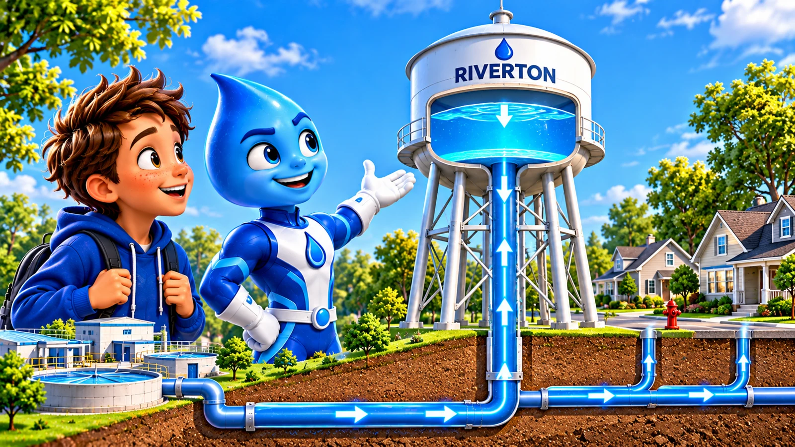

How Do Water Towers Work?

While exploring Riverton, Max spotted something enormous standing high above the buildings.
“Why is that giant tank way up there?”
Drip smiled. Water towers are one of his favorite things to explain!
A Giant Water Storage Tank
A water tower holds water high above the ground.
Pumps fill the tank so water is ready when people need it.
Some water towers can hold more than a million gallons of water!
Gravity Does the Work
When you drop a ball, gravity pulls it toward the ground. Gravity pulls water downward, too.
Because the water is stored high above the ground, its weight creates pressure that helps water flow through underground pipes and into your home.
The higher the water is above you, the more pressure it can provide.
Ready for Busy Days
Imagine everyone in Riverton waking up, brushing their teeth and taking showers at the same time.
That's a lot of water!
Water towers help supply extra water when many people need it at once. They can also help supply water to firefighters during emergencies.
Did You Know?
Water towers come in many different shapes and sizes. Some look like giant golf balls, while others look like enormous mushrooms!
Your Next Discovery
Look for water towers around your town. What shapes and colors can you find? Does your town's name appear on one?
Keep exploring! There's an amazing world beneath your feet.